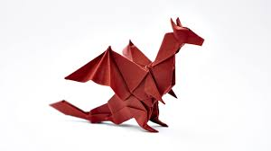
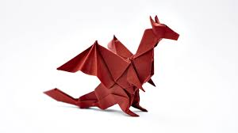

Origami, also called paper folding, art of folding objects out of paper to create both two-dimensional and three-dimensional subjects.
The word origami (from Japanese oru [“to fold”] and kami [“paper”]) has become the generic description of this art form, although
some European historians feel it places undue weight on the Japanese origins of an art that may well have developed independently around
the world.
Making models from paper can require very few resources and take mere minutes (or even seconds) to execute

 
